"Heerlijk cocktails drinken en samen genieten van shared dining gerechten."
Mijn favorieten
Strawberry Fields Forever
De cocktail, een mix van Bombay gin, aardbei en limoen, vormde de perfecte aanvulling op de gerechtjes.
Korean Fried Cauliflower
Bij dit gefrituurde gerecht mis je het vlees geen moment. Het zit boordevol rijke kruiden en heeft een zachte, smeuïge textuur. Absoluut een aanrader die je niet mag overslaan bij een bezoek!
Ik zou zeker nog een keer terugkomen!
Hoewel ik niet vaak vegan eet, blijft Aziatisch eten mijn favoriet – en deze combinatie verraste me echt! De cocktails waren heerlijk, de porties royaal, al zijn de prijzen wat hoog. Ondanks de minder centrale ligging is een bezoek zeker de moeite waard.
Scorekaart

kwaliteit van het eten

Gastvrijheid
Prijs-kwaliteitverhouding
